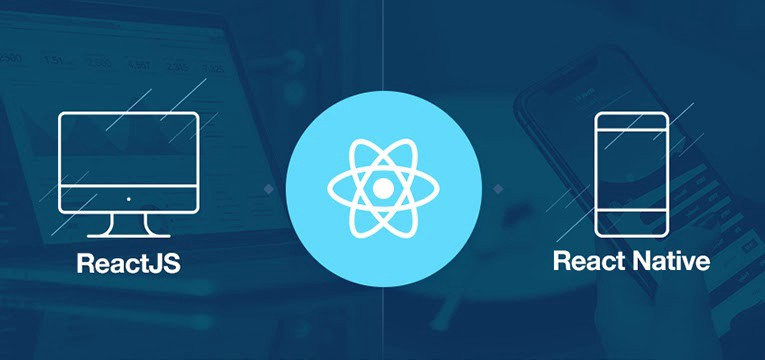

Kotlin Multiplatform (KMP)
The sane approach to sharing code
Me in 2013

Job for a consumer App

Written in different languages
Different architectures
3 separate teams
Each with their own set of bugs
So what ways are there?
React Native
Written in Javascript/Typescript
Share business logic
Write native and web components separately
Kotlin/Swift developers are not fans of Javascript❌
Flutter

Written in Dart
Same components for every platform
Best for green field projects
Different language than every platformüôÉ
Kotlin Multiplatform
Business logic in Kotlin compiles to each platform
Interop with common code from native
Kotlin helps increase productivity and increase developer satisfactionü•∞
Typical Architecture
Typical Architecture
Typical Architecture
KMP Architecture
KMP Architecture
Caching
SQL Delight
Generates typesafe kotlin APIs from your SQL statements
Mainly useful for Android & iOS
Also supports JS, JVM, macOS, & Windows
Demo
Networking
Ktor
Multiplatform HTTP client
Uses Kotlin coroutines
Supports iOS, Android, JS, JVM, Desktop
Can also be used for asynchronous microservice backends or web apps!
Kotlinx Serialization
Multiplatform JSON serialization
Supports Kotlin classes marked as @Serializable and standard collections
Serialize/Deserialize network requests/responses
Complete multiplatform support: JVM, JS and Native
Putting it all together
Testing
Tests in common are ran on each compiled platform
Most ideal for assertions
No mocking library support for every platform, but you can create mocks manually
UI automation is done by each native platform team
How far can you take kmp?
MVI Kotlin - consolidate presentation logic

Powerful time traveling debugging feature
Does not depend on any specific reactive framework
Decompose - BLOC pattern
Has routing feature for pluggable UIs - Jetpack Compose, SwiftUI, React
State Keepers to maintain state across configurations